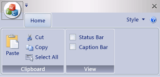

The Ribbon Bar
Introduction
The ribbon is first introduced by Microsoft in the 2000’s. It is a toolbar with a tabbed interface. According to Microsoft:
Note
A ribbon is a user interface (UI) element that organizes commands into logical groups. These groups appear on separate tabs in a strip across the top of the window. The ribbon replaces the menu bar and toolbars. A ribbon can significantly improve application usability. For more information, see Ribbons. The following illustration shows a ribbon. A ribbon can significantly improve application usability. For more information, see Ribbons. The following illustration shows a ribbon.
{kind=link}
Definitions of Ribbon Elements

Application button: The button that appears on the upper-left corner of a ribbon. The Application button replaces the File menu and is visible even when the ribbon is minimized. When the button is clicked, a menu that has a list of commands is displayed.
Quick Access toolbar: A small, customizable toolbar that displays frequently used commands.
Category: The logical grouping that represents the contents of a ribbon tab.
Category Default button: The button that appears on the ribbon when the ribbon is minimized. When the button is clicked, the category reappears as a menu.
Panel: An area of the ribbon bar that displays a group of related controls. Every ribbon category contains one or more ribbon panels.
Ribbon elements: Controls in the panels, for example, buttons and combo boxes. To see the various controls that can be hosted on a ribbon, see RibbonGadgets Sample: Ribbon Gadgets Application.
{kind=link}